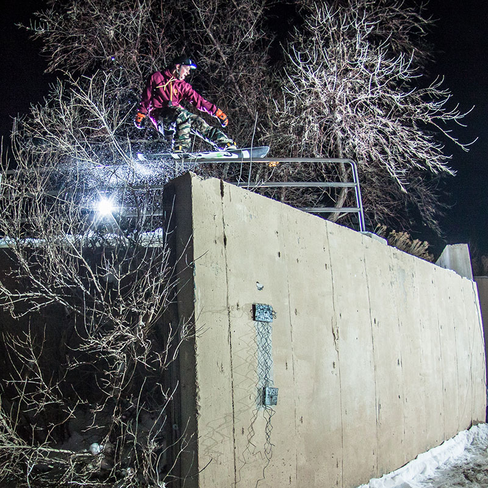

<div id="content">
  <div id="main">
    <div class="container">
      <div class="one_third">
        
      </div>

     <div class="two_third last">
						<h1>Cooper Sclar</h1>
						<div><a href="" title="https://youtu.be/UcSsPf2U9x8" style="font-family: Helvetica;">CLICK HERE TO SEE COOPER RIDE</a> </div>
						<div><strong><br /></strong> </div>
						<div><strong style="font-family: Helvetica;">MEET COOPER...&nbsp;</strong><span>I grew up in the rocky mountain front range. I snowboard because it is fun. If you can think of a better reason to ride please let me know! Style is what     I look for and what I try hardest to harness. Doing a dangerous activity is one thing, but doing a dangerous thing with style is what I call art. As     my coaches said, "Snowboarding is an individual sport best shared with others."</span>							</div>
						<div>
							<br /> </div>
						<div><strong style="font-family: Helvetica;">COOPER'S FAVORITE NS BOARD IS...&nbsp;</strong><span>The&nbsp;Funslinger, because she's flexy and pressy but still holds an edge anywhere!</span> </div>
					</div>
      <hr>
  </div>
</div>